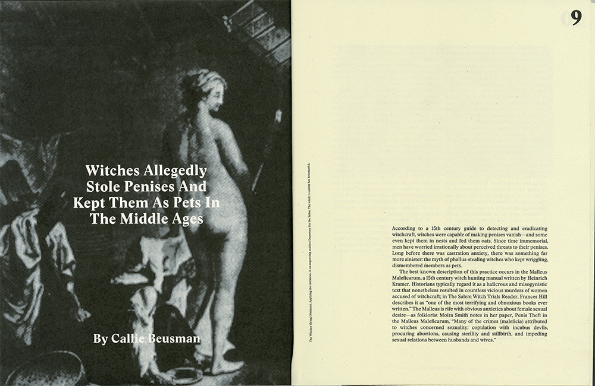
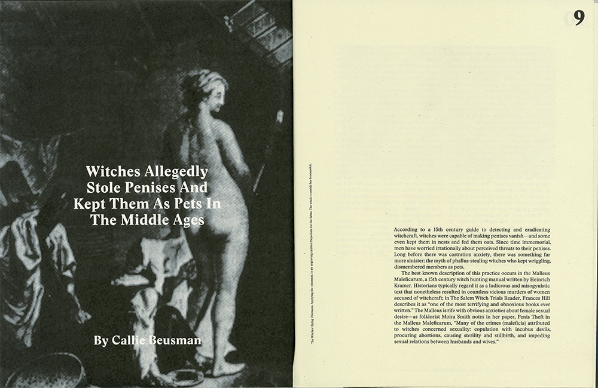
 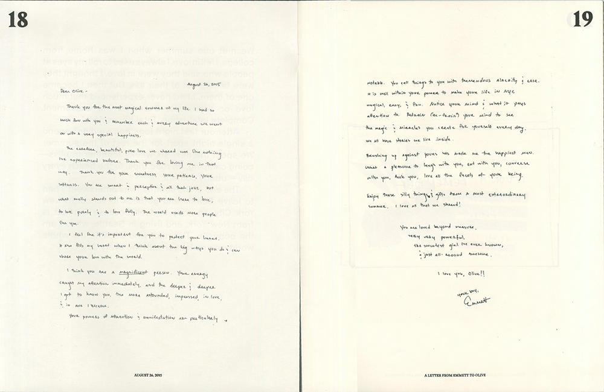
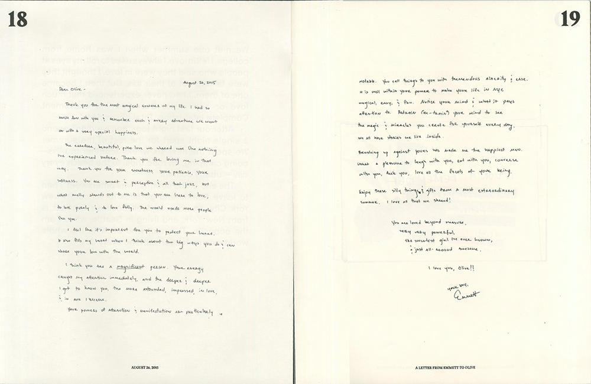

 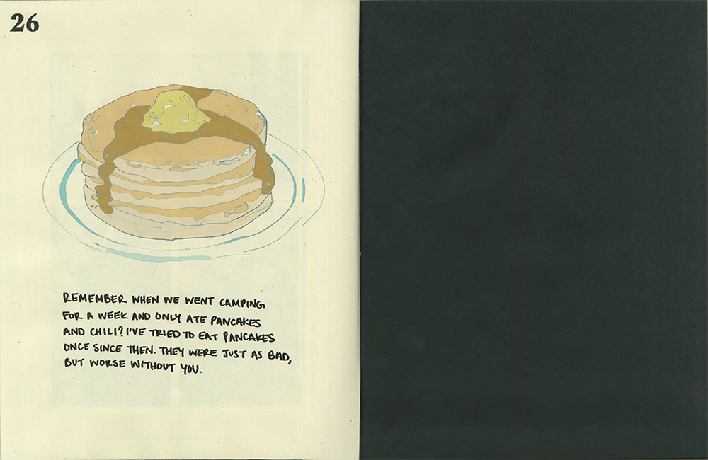
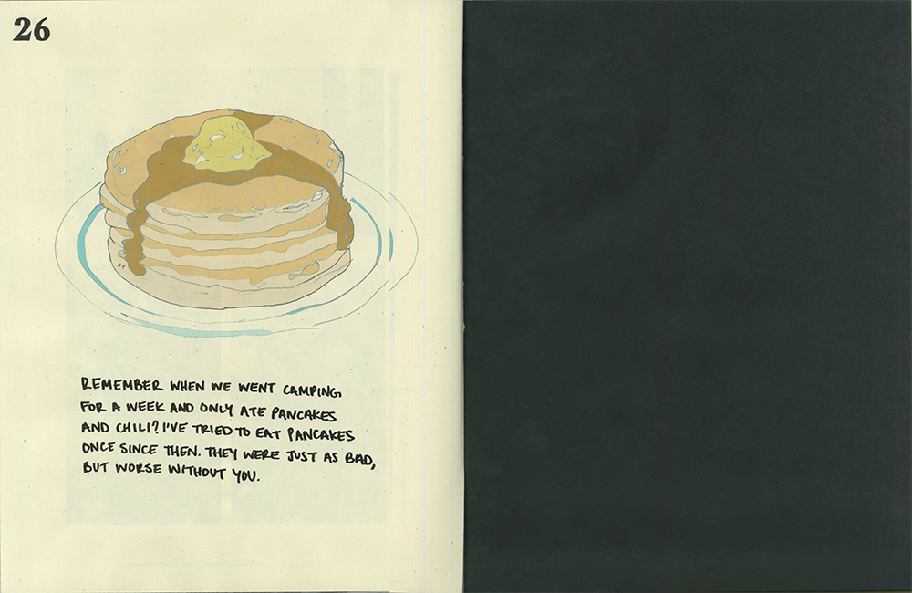


 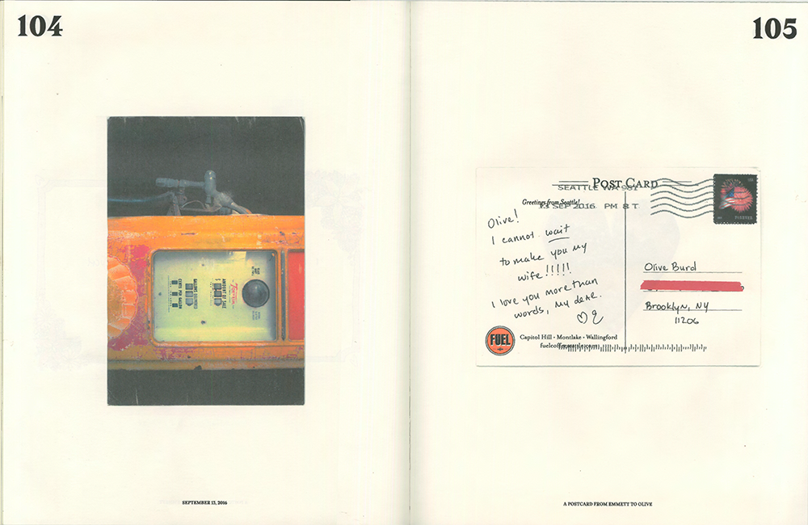
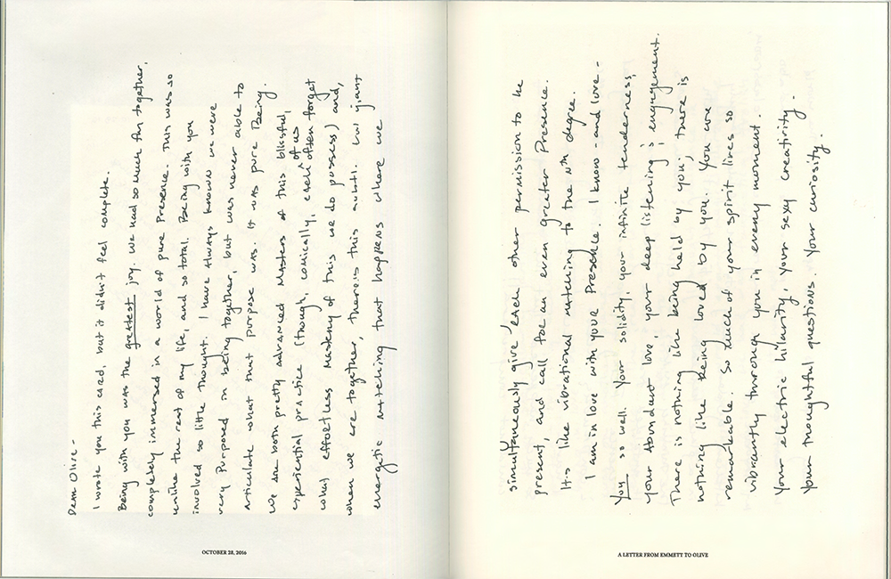
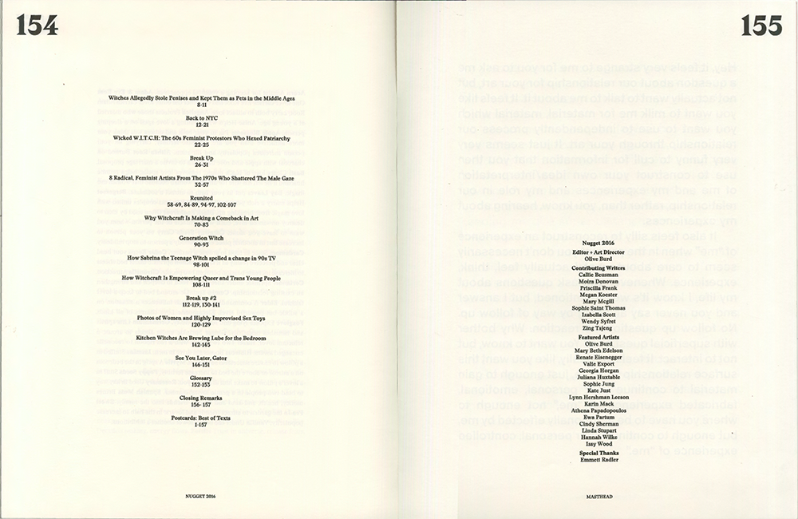
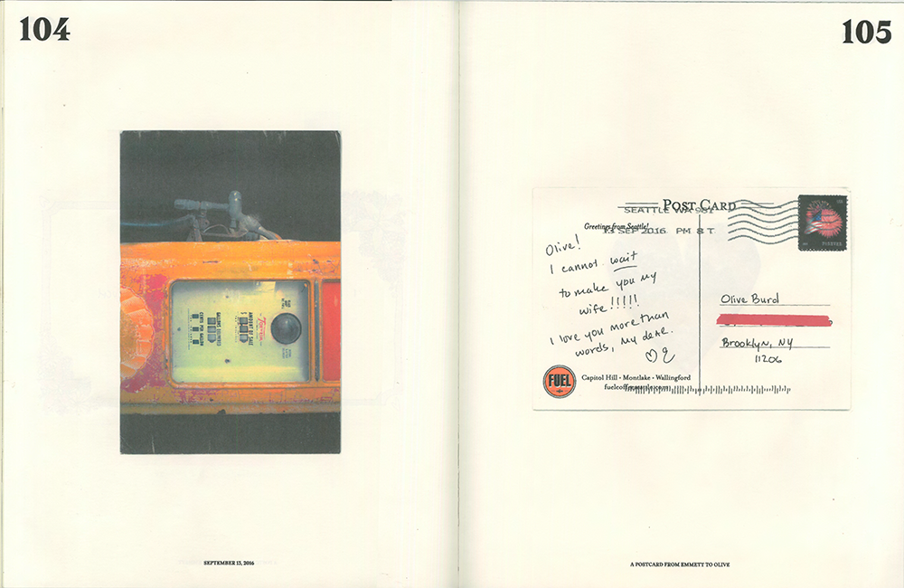
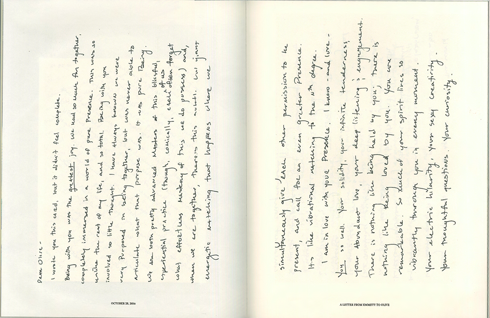
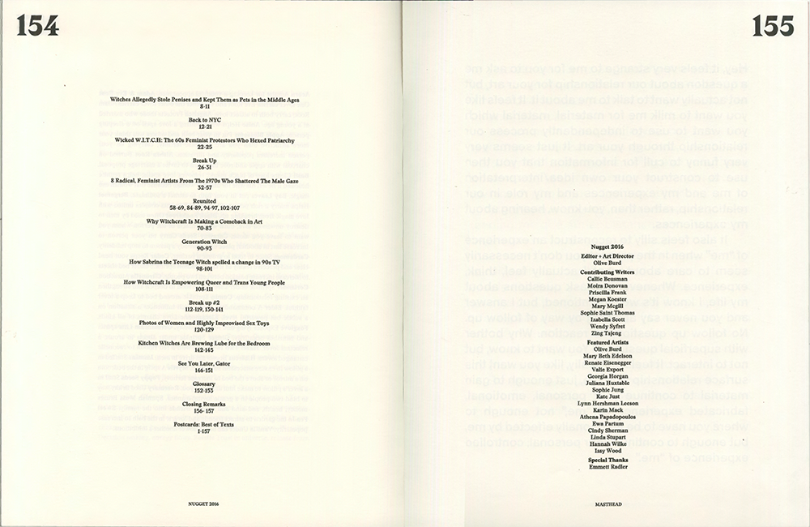


160 page 10" x 13" book; 18" x 24" posters, 2016
Nugget is an annual magazine exploring art and love through femininity and witchcraft. Each issue features a different artist and her romantic relationship. The magazine is titled after the pet name of her significant other, changing with each issue and each relationship featured. Nugget is a magazine interested in the nuances of love, of friendship, of romance. By candidly looking at individual relationships, what are we able to see about a person? By displaying little and everyday objects from a relationship, what do we learn? What’s the power in documenting a relationship?
The 2016 issue, Nugget, features Olive Burd, an artist working out of New York City, and her relationship with Emmett “Nugget” Radler. Olive chose to focus on her entire relationship, almost giving us a timeline. Olive tells us, “I didn’t have an agenda or vision of how I wanted Emmett or our relationship viewed. But once you have consumed everything in the magazine, you realize the whole of it has a clear commentary. It is almost making fun. The repetition. The cycle of breaking up. Excitement. Marriage fantasies. Baby fever. Gratitude. Love. It’s the same thing again and again, but in the present, each time I heard it I was equally as excited and beaming with happiness as the first time. When looked at in its totality, it becomes mocking.” Olive created a set of posters that come with Nugget, as well as a second volume full of bookmarks with crystal and plant uses, and postcards with texts from her ex for readers to tear out and use.
Future magazines may be entirely different in nature--other featured artists may only focus on a single date. Or on heartbreak. Or on a certain month. Each issue allows the tone of the magazine to be radically shifted. The direction of Nugget is truly in the featured artists’ hands.